Java入门很久了，也没有好好整理一下知识树，遇到一些忘记or遗漏的知识点时，就会深感自身能力不足且惭愧，所以借此机会将Java的基础知识结构过一遍
首先是思维导图：

介绍
Java是一种广泛使用的计算机编程语言，拥有跨平台、面向对象、泛型编程的特性，广泛应用于企业级Web应用开发和移动应用开发。
Java的发展依托于互联网，所以绝大多数企业级Web应用开发都是以Java作为开发语言，而移动应用开发则是因为移动设备的Android系统的大部分代码采用Java编程语言编程
发展历史
上世纪90年代初，任职于Sun MicroSystems的詹姆斯·高斯林（James Gosling，公认的Java之父）等人开发了Java语言的雏形，最初被命名为Oak（橡树）。随着1990年代互联网的发展，Sun公司看见Oak在互联网上应用的前景，于是改造了Oak，直到1995年5月以Java的名称正式发布（当时Oak这个名字已被一家显卡制造商注册）。Java伴随着互联网的迅猛发展而发展，逐渐成为重要的编程语言之一。
1999年6月，Sun公司发布了Java的三个版本：微型版（J2ME）、标准版（J2SE）和企业版（J2EE）。
2004年9月，J2SE1.5发布，为了表示该版本的重要性，版本号1.5改为5.0，此后的版本号均以X.0命名。
2005年6月，JavaOne大会召开，Sun公司发布Java SE 6。此时，为了取消Java各种版本名中的数字2：J2EE更名为Java EE，J2SE更名为Java SE，J2ME更名为Java ME。
2009年4月，Oracle公司（甲骨文）以74亿美金收购了Sun公司，Java也随之成为了甲骨文公司的产品。
语言特点
跨平台，Java对于不同的硬件架构和操作系统（Windows、Linux、macOS）等，提供了不同的本地语言环境，这使得开发者或用户不会因为不同平台的差异而在开发或使用过程中产生隔阂。
Java不同于一般的编译语言或解释型语言。它首先将源代码编译成字节码，再依赖各种不同平台上的虚拟机来解释执行字节码，从而具有“一次编写，到处运行”的跨平台特性。在早期JVM中，这在一定程度上降低了Java程序的运行效率。但在J2SE1.4.2之后，Java的运行速度有了大幅提升。
面向对象编程（即Object-oriented programming，缩写OOP，又叫物件导向程式设计）：Java语言的开发者在设计软件的时候将一切事物视作对象进行处理，事物的属性即对象的字段，事物的行为即对象的方法。（作为对比：C语言则是面向过程编程）
泛型（也叫参数化类型）编程允许程序员在强类型程序设计语言中编写代码时使用一些调用时才指定的类型，在实例化时作为参数指明这些类型，使用泛型的主要目的是加强类型安全及减少类型转换的次数。
自动垃圾回收：Java对象的创建和放置都是在内存堆栈上面进行的。当一个对象没有任何引用的时候，Java的自动垃圾收集机制就会发挥作用，自动删除这个对象所占用的空间，释放内存以避免内存泄漏。
解释型：Java程序在Java平台上被编译为字节码格式，然后可以在实现这个Java平台的任何系统中运行。在运行时，Java平台中的Java解释器对这些字节码进行解释执行。
此外java特点还有分布式的、健壮的、安全的、可移植的、多线程的、动态的、高性能的……
JRE、JDK与JVM
JVM：Java Virtual Machine，即java虚拟机，能够运行编译成java字节码形式的应用程序
Java虚拟机有自己完善的硬体架构，如处理器、堆栈、寄存器等，还具有相应的指令系统。JVM屏蔽了与具体操作系统平台相关的信息，使得Java程序只需生成在Java虚拟机上运行的目标代码（字节码），就可以在多种平台上不加修改地运行。通过对中央处理器（CPU）所执行的软件实现，实现能执行编译过的Java程序码（Applet与应用程序）。
JRE：Java Runtime Environment，java运行环境，包括了java虚拟机以及运行库，要运行java程序就需要安装JRE
JDK：Java Development Kit，java开发工具包，除了包含有JRE以外，还有开发者所需的如编译、调试工具等等
关于三者的关系以及包含的组件，参考如下JavaSE概念图：
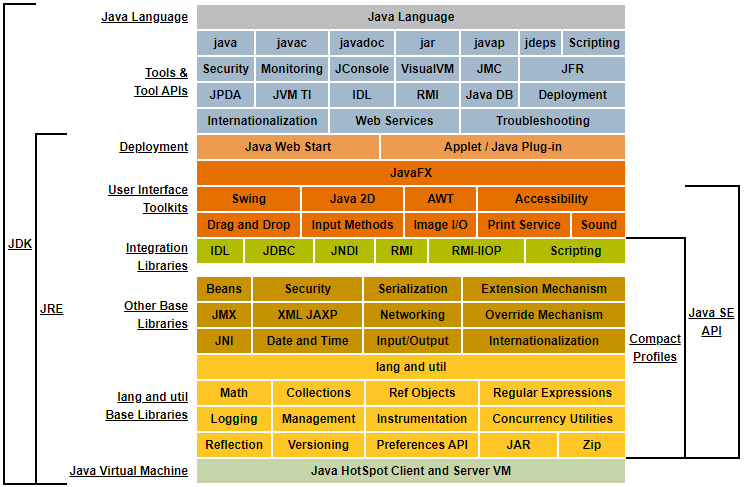
开发工具与环境
搭建Java开发环境要先安装JDK，此处参考JDK8便携版的制作，或者JDK11（有Oracle官方提供的zip版本），需要注意的是JDK11没有自带JRE，需要在JDK根目录使用如下命令生成：
1 | bin\jlink.exe --module-path jmods --add-modules java.desktop --output jre |
若不愿在Oracle注册帐号，还可以通过以下途径进行下载：
- Java I tell you
- Portapps（仅OracleJDK）
- 清华大学开源软件镜像站（仅OpenJDK）
环境变量
在环境变量（当前用户为管理员的话，在用户变量或系统变量中均可）新建JAVA_HOME，值指向JDK的安装目录，然后在PATH中追加%JAVA_HOME%\bin;%JAVA_HOME%\jre\bin，与其它值之间使用分号分割，末尾不用分号
以前的教程中还会提到设置CLASSPATH，需要注意的是在JDK5以后不需要再另外设置CLASSPATH了。参考Setting the Class Path以及classpath和jar
类路径告诉JDK工具和应用程序在哪里可以找到第三方和用户定义的类，这些类不是Java平台的扩展或组成部分。
IDE
尽管可以使用记事本写代码并使用命令来编译运行，但还是不如专门的集成开发工具便捷。
主流的java开发工具：
- Eclipse：最初是由IBM公司开发的，2001年11月贡献给开源社区，由非营利软件供应商联盟Eclipse基金会管理。早期使用的比较多。优点是免费、开源且轻量
- IDEA：JetBrains公司开发，功能强大且十分智能，编码体验很舒适。仅社区版免费但没有数据库工具、不支持Spring开发等等，旗舰版可试用30天。有官方汉化插件，比eclipse占用更多内存，更新稳定但BUG也不少，推出新特性的同时也会有新BUG出现
- VScode：由微软开发，和那个臃肿的Visual Studio没啥关系。严格来说不是IDE，而是功能强大的编辑器，IDE能做到的，它也能做到。丰富的插件市场使它可以胜任一切编程语言
彩蛋
使用十六进制编辑器打开由Java源代码编译出的二进制文件（.class文件）的话，最前面的4个字节是CA FE BA BE，即词组“CAFE BABE”（咖啡屋宝贝）。
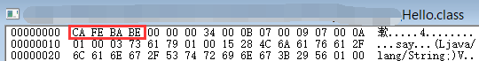
基本语法
无论什么编程语言，先从一段Hello World代码开始：
1 | public class Main { |
- public/class/static/void：都是关键字，其中public为访问修饰符，class表示这是一个类，static表示是静态的，void表示返回类型为空（没有返回值）
- Main/main；作为标识符，M大写的表示类名，这个名字必须与文件名一致，每个java源文件有且只能有一个公共类；小写的则是方法名，作为应用程序的入口点。在Java编程语言中，每个应用程序都必须包含一个main方法
- String[] args：用于传递命令行参数
标识符
标识符是指用于命名类名、变量名以及方法名的字符，它有以下几点要求：
- 必须以字母（大写或小写）,美元符号
$、或者下划线_开始 - 之后可以是字母（大写或小写）,美元符号
$、下划线_或数字的任意组合 - 不能使用关键字作为标识符
- 大小写敏感
不要使用中文作为标识符，尽管这在编译和运行过程中是正常的
关键字
| 类别 | 关键字 | 说明 |
|---|---|---|
| 访问控制 | private | 私有的 |
| protected | 受保护的 | |
| public | 公共的 | |
| 类、方法和变量修饰符 | abstract | 抽象的（类） |
| class | 类 | |
| extends | 扩充、继承 | |
| final | 最终的、不可变的 | |
| implements | 实现（接口） | |
| interface | 接口 | |
| native | 本地，原生方法（非Java实现） | |
| new | 新、创建 | |
| static | 静态 | |
| strictfp | 严格、精准 | |
| synchronized | （线程）同步 | |
| transient | 短暂 | |
| volatile | 易失 | |
| 程序控制语句 | braek | 跳出（循环） |
| case | 定义一个值以供switch选择 | |
| continue | 继续 | |
| default | 默认 | |
| do | 做（循环） | |
| else | 否则 | |
| for | 循环 | |
| if | 如果 | |
| instanceof | （是否是对象的）实例 | |
| return | 返回 | |
| switch | 根据值选择执行 | |
| while | 循环 | |
| 错误处理 | assert | 断言 |
| catch | 处理捕获（的异常） | |
| finally | 有没有异常都执行 | |
| throw | 抛出异常 | |
| throws | 声明可能被抛出的异常 | |
| try | 捕获（异常） | |
| 包相关 | import | 导入 |
| package | 包（的路径） | |
| 基本类型 | boolean | 布尔 |
| byte | 字节 | |
| char | 字符 | |
| double | 双精度浮点 | |
| float | 单精度浮点 | |
| int | 整型 | |
| long | 长整型 | |
| short | 短整型 | |
| null | 空 | |
| 变量引用 | super | 父类、超类 |
| this | 本类 | |
| void | 无返回值 | |
| 保留 | goto | 跳转，不可使用 |
| const | 常量，不可使用 |
修饰符
不写修饰符即为package/friendly/default。
package：在同一包内可见。可修饰：类、接口、变量、方法
private：在同一类内可见。可修饰：变量、方法。 不能修饰类（外部类）
public：对所有类可见。可修饰：类、接口、变量、方法
protected：对同一包内的类和所有子类可见。可修饰：变量、方法。 不能修饰类（外部类）
修饰符的访问范围
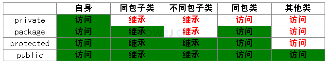
注释
注释的作用：标识程序是干什么的，以及它是如何构建的。注释帮助程序员进行相互沟通以及理解程序。注释不是程序设计语言，所以编译器编译程序时忽略它们。
1 | // 单行注释 |
文档注释
还有一种特殊的注释叫JavaDoc，它允许你在程序中嵌入关于程序的信息，这种特殊的多行注释需要写在类或方法的定义处，用于从Java源文件生成API文档的HTML页面。格式如下
1 | /** |
文档注释内可以使用两种标签，一种是仅放置于描述部分后面的块标签（Block tags）：
- @author：作者名
- @deprecated：已弃用的类、方法或属性
- @throws和@exception：抛出的异常
- @param：方法的参数
- @return：方法的返回值
- @version：版本号
- @since：起始的JDK版本号（基于什么版本开发的）
- @see：指定到其它类的链接（另请参阅）
- @serial：用于默认可序列化字段（参考Java对象序列化）
- @implNote：实现说明
另一种是可以放置在注释的描述部分或任意位置的内联标签（Inline tags）：
- {@docRoot}：当前文档根目录的路径
- {@value}：显示常量值
- {@inheritDoc}：从直接父类继承的注释
- {@link}：插入带有可见文本标签的内联链接，该标签指向引用类的指定包、类或成员名称的文档
- {@linkplain}：同上，但是链接以纯文本显示
- {@code}：等同于
<code></code>，以代码字体显示，而不是将文本解释为HTML标记或嵌套的Javadoc标签 - {@literal}：显示文本，而不是将文本解释为HTML标记或嵌套的Javadoc标签
文档生成示例：
1 | /** |
然后使用javadoc命令（注意使用参数指定编码格式）生成HTML文档，双击index.html查看
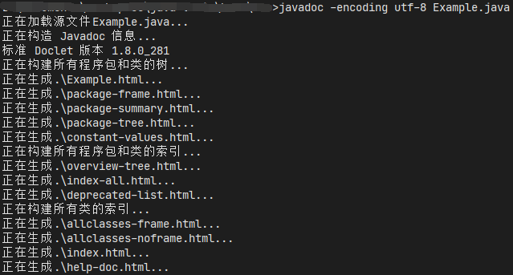
在IDEA中可以通过主菜单->工具->生成JavaDoc...便捷的生成文档
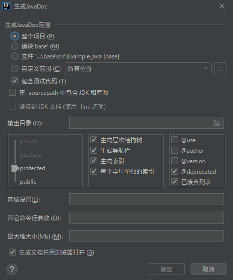
变量
变量即可以变化的量。在Java中，变量按类型可以分为基本类型的变量和引用类型的变量。按范围可以分为局部变量、类变量(静态变量)、成员变量(非静态变量、实例变量)
1 | public class Main { |
局部变量
- 局部变量声明在方法、构造方法或者语句块中；
- 局部变量在方法、构造方法、或者语句块被执行的时候创建，当它们执行完成后，变量将会被销毁；
- 访问修饰符不能用于局部变量；
- 局部变量只在声明它的方法、构造方法或者语句块中可见；
- 局部变量是在栈上分配的。
- 局部变量没有默认值，所以局部变量被声明后，必须经过初始化，才可以使用。
实例变量
- 实例变量声明在一个类中，但在方法、构造方法和语句块之外；
- 当一个对象被实例化之后，每个实例变量的值就跟着确定；
- 实例变量在对象创建的时候创建，在对象被销毁的时候销毁；
- 实例变量的值应该至少被一个方法、构造方法或者语句块引用，使得外部能够通过这些方式获取实例变量信息；
- 实例变量可以声明在使用前或者使用后；
- 访问修饰符可以修饰实例变量；
- 实例变量对于类中的方法、构造方法或者语句块是可见的。一般情况下应该把实例变量设为私有。通过使用访问修饰符可以使实例变量对子类可见；
- 实例变量具有默认值。数值型变量的默认值是0，布尔型变量的默认值是false，引用类型变量的默认值是null。变量的值可以在声明时指定，也可以在构造方法中指定；
- 实例变量可以直接通过变量名访问。但在静态方法以及其他类中，就应该使用完全限定名：ObejectReference.VariableName。
静态变量
- 类变量也称为静态变量，在类中以 static 关键字声明，但必须在方法之外。
- 无论一个类创建了多少个对象，类只拥有类变量的一份拷贝。
- 静态变量除了被声明为常量外很少使用，静态变量是指声明为 public/private，final 和 static 类型的变量。静态变量初始化后不可改变。
- 静态变量储存在静态存储区。经常被声明为常量，很少单独使用 static 声明变量。
- 静态变量在第一次被访问时创建，在程序结束时销毁。
- 与实例变量具有相似的可见性。但为了对类的使用者可见，大多数静态变量声明为 public 类型。
- 默认值和实例变量相同。数值型变量默认值是 0，布尔型默认值是 false，引用类型默认值是 null。变量的值可以在声明的时候指定，也可以在构造方法中指定。此外，静态变量还可以在静态语句块中初始化。
- 静态变量可以通过：ClassName.VariableName的方式访问。
- 类变量被声明为 public static final 类型时，类变量名称一般建议使用大写字母。如果静态变量不是 public 和 final 类型，其命名方式与实例变量以及局部变量的命名方式一致。
变量的作用域
变量的范围是程序中该变量可以被引用的部分。
- 局部变量的作用范围从声明开始，直到包含它的块结束。
- 方法的参数范围涵盖整个方法，它实际上是一个局部变量。
- 循环的初始化部分声明的变量，其作用范围为整个循环体。但循环体内声明的变量其作用范围是从它声明到循环体结束。
常量
常量使用final关键字修饰，常量名通常为全部大写，常量在定义时进行初始化后就不可再次赋值，再次赋值会导致编译错误。
运算符
| 类型 | 操作符 | 说明 |
|---|---|---|
| 算术运算符 | + | 加 |
| - | 减 | |
| * | 乘 | |
| / | 除 | |
| % | 取余，左边的数对右边相除后的余数 | |
| ++ | 自增 | |
| – | 自减 | |
| 关系运算符（值判断） | == | 等于 |
| != | 不等于 | |
| > | 大于 | |
| < | 小于 | |
| >= | 大于或等于 | |
| <= | 小于或等于 | |
| 位运算符 | & | 与，如果相对应位都是1，则结果为1，否则为0 |
| | | 或，如果相对应位都是 0，则结果为 0，否则为 1 | |
| ^ | 非，也叫异或，如果相对应位值相同，则结果为0，否则为1 | |
| ~ | 按位取反，0变1，1变1 | |
| << | 左移 | |
| >> | 右移 | |
| >>> | 无符号右移（按位右移补零） | |
| 逻辑运算符 | && | 逻辑与，“一假则假” |
| || | 逻辑或，“一真则真” | |
| ! | 逻辑非，“真假反转” | |
| 赋值运算符 | = | 赋值，将右边的值赋予左边 |
| += | 相加后赋值，将左边原来的值与右边相加后赋予左边，下同 | |
| -= | 相减后赋值 | |
| *= | 相乘后赋值 | |
| /= | 相除后赋值 | |
| %= | 取余后赋值 | |
| <<= | 左移后赋值 | |
| >>= | 右移后赋值 | |
| &= | 按位与后赋值 | |
| ^= | 按位异或赋值 | |
| != | 按位非后赋值 | |
| 条件运算符(三元运算符) | ?: | 判断第一个表达式的真假，真则值为第二个表达式，假则值为第三个表达式 |
| 类型比较 | instanceof | 检查该对象是否是一个指定的类型（类类型或接口类型） |
| 字符串连接运算符 | + | 当表达式中含有字符或字符串时，此运算符将视为字符串的连接 |
- 逻辑运算
&&和||是短路的 - 只能对整数类型以及字符类型进行位运算
- 位运算比算术运算效率高
运算符优先级
运算优先级从高到低如下所示，不用刻意记忆，使用时可以通过括号()来改变优先级的顺序
| 类别 | 操作符 | 关联性 |
|---|---|---|
| 后缀 | () [] . (点操作符) | 左到右 |
| 一元：后自增、后自减 | expr++ expr– | 从左到右 |
| 一元：前自增、前自减 | ++expr –expr + - ～ ！ | 从右到左 |
| 先乘除 | * / ％ | 左到右 |
| 后加减 | + - | 左到右 |
| 移位 | >> >>> << | 左到右 |
| 关系 | > >= < <= | 左到右 |
| 相等 | == != | 左到右 |
| 按位与 | ＆ | 左到右 |
| 按位异或 | ^ | 左到右 |
| 按位或 | | | 左到右 |
| 逻辑与 | && | 左到右 |
| 逻辑或 | | | | 左到右 |
| 条件 | ?: | 从右到左 |
| 赋值 | = += -= *= /= ％= >>= <<= ＆ = ^= |= | 从右到左 |
| 逗号 | , | 左到右 |
基本数据类型
- 基本数据类型有：byte、short、int、long、float、double、boolean、char
其中byte，short，int，long是整数类型，float、double是浮点数类型，char是字符类型，boolean布尔类型用于逻辑判断 - long类型的值在书写时可以后跟大写
L表示，float类型的值在书写时必须后跟f（可大写可小写） - 整数类型的不同进制表示示例：16进制0xf，8进制077
- char的16进制unicode字符表示法：\u0000
- java没有无符号的数据类型
范围
按8位=1字节，最高位表示符号位（正或负），以二进制补码计算，各种整数类型可表示的范围如下：
- byte：-2^7^到2^7^-1 = -128 ~ 127
- short：-2^15^到2^15^-1 = -32768 ~ 32767
- int：-2^31^到2^31^-1 = -2147483648 ~ 2147483647
- long：-2^63^到2^63^-1 = -9223372036854775808 ~ 9223372036854775807
char为2个字节，float为4个字节，double为8个字节
关于浮点数的定义，参考IEEE 754二进制浮点数算术标准，这里给出范围
- float：2^-149^到3.4*10^38^
- double：2^-1074^到1.79*10^308^
类型转换
不同的基本数据类型之间可以混合进行计算，但需要转换先转化为同一类型。有如下三种转换形式：
自动类型转换
char类型与整数类型计算时char自动转换为int
1 | char c = 'a'; |
低精度的与高精度的计算时，低精度的先转换为高精度的
1 | float f = 0.1f; |
强制类型转换
可以使用强制转换由高精度的数据类型转换到低精度的数据类型，但超过范围时会丢失精度
格式：(需要转换的类型) 被转换的变量
1 | int i = 200; |
高位字节被去掉，保留低位字节进行表示
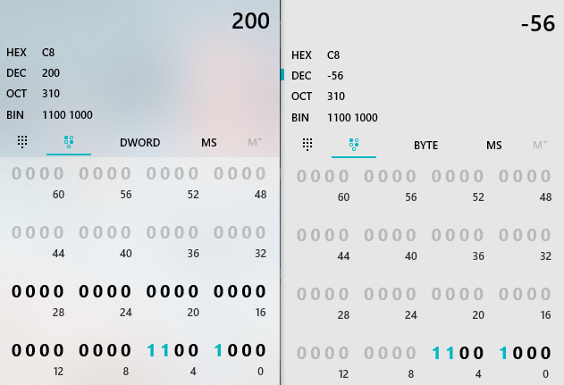
由浮点数转换到整数时，舍弃小数部分
1 | float f = 1.23f; |
隐含强制类型转换
所有的整数进行计算时会提升到默认类型int
1 | byte b = 100; |
流程控制
条件判断：if或者if…else
循环：for(;;)、for(:)、while()和do,,,while
多重选择：switch…case，可用于整数类型和字符（串）类型，当没有匹配到任何case语句时执行default分支
break用于结束多重选择或跳出整个循环体
continue用于结束当次循环，跳转到下一次循环
数组
数组是相同数据类型的集合，数组是引用类型，一旦创建后大小不能改变，使用数组名.length来获得数组中的元素数量
数组中的元素初始化时若未赋值，将使用默认值，整型都是0，浮点型是0.0，布尔型是false，字符为\0（控制字符，ASCII代码0），引用类型为null
声明数组的方式有两种，推荐使用前者，后者是为了照顾C/C++的程序员
- 数据类型[] 数组名
- 数据类型 数组名[]
创建数组的方式（第三种为静态初始化，仅用于声明的同时赋值，不能对已赋值数组进行二次赋值）
- new 数据类型[数组大小]
- new 数据类型[]{ 数据1, 数据2, 数据3, …, 数据n }
- { 数据1, 数据2, 数据3, …, 数据n }
通过索引值访问数组元素，索引值从0开始到length-1。如果越界，会抛出ArrayIndexOutOfBoundsException
多维数组
使用多维数组与一维数组相似：数据类型[][] 数组名 = { {数据1, 数据2, 数据3, …, 数据n}, …, {数据1, 数据2, 数据3, …, 数据n} }
也可以创建锯齿型数组，例如
1 | int[][] array = { |
基本输入与输出
通过Scanner对象获取简单的文本扫描器，可以使用正则表达式解析基本类型和字符串，将标准输入流对象System.in传入构造方来扫描控制台输入
1 | public static void main(String[] args) { |
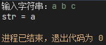
方法说明
hasNext()：判断是否还有输入hasNextLine()：判断是否还有下一行输入next()：接收字符串，以空格为结束标志nextLine()：接受一整行字符串hasNextXxx()：Xxx为数据类型，判断是否还有对应类型的输入nextXxx()：Xxx为数据类型，将输入转换为对应类型，无法转换时抛出InputMismatchExceptionclose()：关闭Scanner对象
System.out是标准输出流对象，用于向控制台输出消息，其常用的方法有
println()：有多种重载方法，直接输出换行或者接收任何对象输出其数据并换行，接收Object类型时会先调用String.valueOf()。具体使用的换行符取决于系统print()：同上，但不会换行，并且不接收空参数printf()：类似于c语言的printf函数，使用指定的格式字符串和参数将格式化的字符串输出format()：同上
编程规范
- Google Java编程风格规范，中文版
- 阿里巴巴Java开发手册
- Oracle Java语言规范
面向对象
面向对象程序设计是种具有对象概念的编程典范，同时也是一种程序开发的抽象方针。它可能包含数据、属性、代码与方法。对象则指的是类（class）的实例。它将对象作为程序的基本单元，将程序和数据封装其中，以提高软件的重用性、灵活性和扩展性，对象里的程序可以访问及经常修改对象相关连的数据。在面向对象程序编程里，计算机程序会被设计成彼此相关的对象。
特征
面向对象的编程语言具有如下三大特征：
- 封装：将抽象性函数接口的实现细节部分包装、隐藏起来的方法。
具备封装性的面向对象程序设计隐藏了某一方法的具体运行步骤，取而代之的是通过消息传递机制发送消息给它。封装是通过限制只有特定类的对象可以访问这一特定类的成员，而它们通常利用接口实现消息的传入传出。 - 继承：在某种情况下，一个类会有“子类”。子类比原本的类（称为父类）要更加具体化。子类会继承父类的特征和行为，使得子类对象（实例）具有父类的实例域和方法。
- 多态：多态的原义是指生物学中表示生物或物种可以具有许多不同的形式或阶段。这个原则也可以应用于面向对象的编程语言，即类的子类可以定义它们自己的唯一行为，但仍然共享父类的一些相同功能。由继承而产生的相关的不同的类，其对象对同一消息会做出不同的响应
类
类（class）是创建对象的蓝图，是能描述一类事物行为和状态的模板或者说所创建的对象共同的属性和方法。
字段(属性)
在一个类中定义的字段有两种，一种是实例字段。实例字段的特点是，不同的实例有各自的字段，独立使用互不影响。
另一种使用static修饰的字段是静态字段，也叫类字段。静态字段是类独有的，所有实例都会共享该字段
使用final修饰的字段在初始化后不能被改变
抽象类
使用abstract关键字修饰的类叫抽象类，它可以包含抽象方法。抽象类无法实例化，但可以进行子类化
- 如果一个类包含抽象方法，那么类本身必须则声明为
abstract - 当抽象类被子类化时，其子类需要实现父类中所有的抽象方法，若没有则子类必须声明为
abstract - 抽象类可以包含静态字段和方法，同样使用类名进行引用
- 抽象类可以实现接口，且不用实现所有方法，但此抽象类的非抽象子类必须实现其接口的所有方法
抽象类被定义为永远不会也不能被实例化为具体对象的一种类。它往往用于定义一种抽象上的概念，在类的继承关系中它往往处在较上层的位置。在程序设计的实践活动中，抽象类与接口存在类似的地方，即它更偏重于对共通的方法和属性进行规约。但与接口存在一个非常大的差异则在于，抽象类往往可以规约一个共同的方法和属性时提供一个对他们的实现。
接口
使用关键字interface来申明一个接口。接口可以规定方法的原型：方法名、参数列表以及返回类型，但不能规定方法的实现
- 一个类只能有一个父类，但可以实现（implements）多个接口。即“单继承，多实现”
- 接口默认是抽象的，声明接口的时候不需要使用abstract关键字。
- 接口中的方法默认也是抽象的，所以方法的abstract关键字也不需要。
- 接口中的所有方法默认是public的。所以不需要使用public关键字（用了也不影响，编译器会忽略）
- 接口可以继承（extends）其他接口，类似于子类继承父类，相当于扩展了接口的方法
比较接口与抽象类
| 接口 | 抽象类 | |
|---|---|---|
| 实例化 | 不能 | 不能 |
| 定义字段 | 所有字段均为public、static和final的 | 可以声明非静态和final的 |
| 定义方法 | 所有方法均为public的 | 支持所有访问修饰符的方法 |
| 继承 | 只能继承接口 | 单继承 |
| 实现 | 可以实现多个接口 | 可以实现多个接口 |
使用抽象类还是接口？
- 使用抽象类：当需要在几个密切相关的类之间共享代码，或者需要除public之外的访问修饰符(例如protected和private)，或需要声明非static或非final字段时
- 使用接口：会有不相关的类将实现你的接口，或指定特定数据类型的行为，但不关心谁实现其行为，以及想要利用类的多重继承机制时
嵌套类
嵌套类分为两类：静态和非静态。声明为
static的嵌套类称为静态嵌套类(static nested classes)。非静态嵌套类称为内部类(inner classes)。
内部类
内部类即在类中定义的类
要实例化内部类，必须先实例化外部类，然后通过外部类的实例来实例化内部类。内部类可以直接访问外部类的方法和字段（包括private的）。但是由于内部类与实例相关联，所以无法定义任何静态字段或方法
1 | public class Main { |
静态内部类
可以用static修饰内部类使其成为静态内部类。同样的，使用静态内部类，需要通过外部类的实例
1 | public class Main { |
局部类
也叫本地类（local class），是一种在方法体中，for 循环或 if 子句中定义的类。
1 | public class Main { |
- 局部类可以访问局部变量。但是只能访问 final 或 effectively final (实际上 final，在初始化之后其值永远不会更改的) 的封闭块的局部变量和参数。
- 在方法中声明的局部类可以访问方法的参数
- 局部类与内部类类似，无法定义或声明任何静态字段或方法
- 不能在一个语句块内声明一个接口，因为接口本质上是静态的（不能被实例化）
- 局部类可以有静态字段，前提是它们是常量，即使用
final static修饰
匿名类
不能实例化接口，但可以使用匿名类的方式来创建接口的对象。只会使用一次的局部类可以更改成匿名类，它能够同时声明和实例化一个要实现的接口或要继承的类。
1 | public class Main { |
- 不能在匿名类中声明构造函数
- 匿名类的主体中可以声明方法，但不能使用语句
- 局部类是类声明，但匿名类是表达式，所以它必须是语句的一部分，即末尾需要有一个分号
- 与局部类相同，无法在匿名类中定义或声明任何静态字段或方法
- 但同样的，可以具有
final static修饰的常量
有这么多不同类型的嵌套类，那何时使用嵌套类，局部类，匿名类呢？
当需要声明字段或其他方法，使用匿名类
当需要创建多个类的实例，访问其构造方法或引入新的类时，使用局部类
如果需求与局部类相似，但希望更广泛地使用，并且不需要访问局部变量或方法参数时，且需要访问非公共字段和方法时，使用非静态嵌套类（内部类），否则使用静态嵌套类
枚举
枚举是一种特殊的类，使用enum关键字定义，它使变量成为一组预定义的常量，使用时变量必须等于其预定义的值之一。因为是常量，所以枚举的字段名称通常全为大写字母。
所有枚举隐式继承 java.lang.Enum。因为一个类只能继承一个父类，所以枚举不能继承任何其他类。
枚举类型的构造函数必须是包私有或私有访问，它会在枚举主体开头自动创建定义的常量。你不能自己调用枚举的构造函数。
可以声明枚举的实例，但不能实例化枚举类型，即不能使用new操作符创建枚举实例
可以在枚举类主体内定义方法和其他字段。或者定义枚举常量的字段值，（在常量创建时）使用构造函数将这些值传递给枚举常量。
必须在任何字段或方法之前首先定义常量。此外，当存在字段和方法时，枚举常量列表必须以分号结尾。
1 | public enum Color { |
枚举类的字段也可以是非final类型，即可以在运行期修改，但是不推荐这样做
编译器在创建枚举时会自动添加一些特殊的方法
静态方法
values()：该方法返回一个数组，此数组按照声明的顺序包含了枚举的所有值。此方法通常用于迭代枚举类型的值常量的final方法
name()：返回当前枚举常量的名称，与枚举中声明的名称完全相同常量的final方法
ordinal()：返回此枚举常量的序号（其在枚举声明中的位置，从0开始）。大多数情况下不会使用这种方法，它被设计用于复杂的基于枚举的数据结构
因
toString()方法可被重写，所以当需要枚举常量的原始名称时，应使用name()方法；需要具有可读性时，使用toString()方法
对象(实例)
对象是类的一个实例，有状态和行为。一个典型的 Java 程序会创建许多对象，它们通过调用方法进行交互。通过这些对象的交互程序可以执行各种任务
使用new操作符从一个类中创建一个对象，对象名作为标识符需要符合其命名规则。new操作符通过为新对象分配内存并返回对该内存的引用来实例化一个类。new操作符也会调用对象的构造函数。
1 | Type name = new Constructor(zero or more parameters); |
方法
方法（Method）指的是对象（所谓的实例方法）的一种子程序。形同面向过程编程里的函数，一个方法通常以一系列的语句所组成，并以之完成一个动作。其可以借由输入一组参数以制订所需的动作，且一部分的方法可能会有输出值（返回值）。方法的目的是提供一个机制，以访问（对于读和写）对象的私有资料存储区。
方法声明的必需元素包括方法的返回类型、名称、一对括号 ()， 以及在大括号 {} 之间的方法主体。完整的方法声明有以下6个部分：
- 访问修饰符（如
public，private） - 方法返回的值的数据类型，如果该方法不需要返回值，则为
void - 方法名称，规范与标识符类似，但略有不同
- 括号中的形式参数列表，以逗号分割并以它们的数据类型为开头，由括号
()括起来。如果没有参数，则必须使用空括号 - 一个异常列表，以
throws声明并以逗号分割的异常类型，说明这个方法可能会抛出的一个或多个异常 - 方法体，在括号
{}之间的代码，其中可以包括局部变量的声明
方法名称和参数类型构成为方法的签名（signature）
方法的参数
除了普通的方法参数外，有一种特殊的参数叫可变参数：可以在参数列表的最后一个参数的类型后面使用三个点(...)，空格和参数名称来创建可变数量的参数方式，当不清楚有多少特定类型的参数会传递给该方法时，就可以使用可变参数，这是手动创建数组的快捷方式，可以传入任意数量的参数来调用该方法，包括零个。
可以将任何数据类型用于方法的参数，但需要注意
- 基本数据类型（如int、double）通过值传递到方法中，这意味着对参数值的任何更改仅存在于该方法的范围内，当该方法返回时，参数将消失，对其进行的任何更改都将丢失。
- 引用数据类型（对象、数组）也是通过值传递到方法中。这意味着当方法返回时，传入的引用仍然引用与之前相同的对象。所以，如果对象的字段值具有适当的访问级别，则可以在该方法中更改该字段。
运行以下程序，其中point对象的字段值x与y变化了，但是i还是原来的值
1 | public static void main(String[] args) { |
构造方法
又叫构造函数，类似于一般的方法，除了命名与类名相同并且没有返回类型，它是在创建一个类的实例时自动调用的。可以使用构造函数来初始化实例的字段
编译器会自动为任何没有构造函数的类提供一个无参数的默认构造函数。这个默认构造函数将调用父类的无参构造函数。在这种情况下，如果超类没有无参构造函数，编译器会发出警告，因此你必须确认它是否存在。没有显式父类时，隐式父类为Object，其有一个无参的构造函数。
子类继承父类时，创建子类对象会先调用父类构造方法再调用子类的构造方法
如果一个类的构造函数不能被调用，那么它就不能直接创建对象。
静态方法
使用static修饰的方法就叫静态方法，或者类方法。一个典型的例子：作为程序入口的main方法
1 | public static void main(String[] args){} |
调用实例方法必须通过一个实例变量，而调用静态方法则不需要实例变量，通过类名就可以调用。静态方法更类似于其它编程语言的函数
静态方法内只能访问静态字段
方法重载
方法重载（Overload）：当存在多个同名方法但方法之间形式参数的数据类型不同或数量不同时，即为方法重载。
- 重载的方法的返回值可以不同，但是如果重载的方法之间只有返回值不同就不足以构成重载。因为编译器在区分不同的重载方法时不考虑返回类型，所以即使它们具有不同的返回类型，也不能声明具有相同签名（即方法名称和参数类型）的两个方法。
- 访问修饰符也可以不同，规则同上，如果仅有访问修饰符不同就不能构成重载
- 重载的方法可以声明新的或更多的抛出异常
- 不能声明多个具有相同名称和相同数量与类型的参数的方法，因为编译器无法区分
- 构造方法也可以重载，重载方式与普通方法的重载形式一样，唯一不同的是没有返回值的声明
方法重写(覆写)
方法重写（Override）：子类通过提供与父类（超类）中的方法具有相同签名（名称和参数）以及相同返回类型的方法，子类中的实现将覆盖父类（超类）中的实现，这种子类方法的实现就叫方法重写。具体执行的方法将由调用该方法的对象确定。
- 重写方法时，使用
@Override注解用来指示编译器将要覆盖父类中的方法。如果重写的方法没有使用此注解，编译不会报错；如果被重写的方法不存在且子类方法使用了此注解，编译则报错 - 重写的方法不能抛出新的异常或者比被重写的方法申明范围更广的异常
- 被
final关键字修饰的方法不能被重写 - 重写的方法的访问权限不能比父类中被重写的方法的访问权限低（public>protected>package>private）
- 参考修饰符的访问范围：如子类与父类在同一个包中，那么子类可以重写父类无访问修饰符的方法，若不再同一个包中则不行
- 如果不能继承一个类（被
final修饰），则不能重写该类的方法 - 重写方法还可以返回由被重写方法返回类型的子类型。此子类型称为协变（covariant）返回类型
- 使用
super关键字在子类中调用父类的被重写方法，使用super(参数列表)调用父类的构造方法 - 子类可以重载（Overload）从超类继承的方法，这样的重载方法既不隐藏也不覆盖超类实例方法，它们是新方法，对于子类是唯一的。
被隐藏的方法
如果子类定义的静态方法与父类中的静态方法具有相同的签名（名称和参数），则子类方法隐藏父类中的方法。
- 因为通过实例进行调用，所以被调用的重写实例方法的是子类中的方法。
- 因为静态方法总是通过类名来进行调用，所以被调用的隐藏静态方法取决于它是从父类还是从子类调用的。
以下代码中Main类包含一个实例方法和一个静态方法以及用于程序入口的main方法，SubMain继承了Main类，它重写Main了中的实例方法，并隐藏Main中的静态方法
1 | public class Main { |
输出结果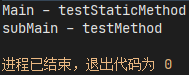
定义与父类的方法具有相同签名的方法时会发生的情况：
| 父类实例方法 | 父类静态方法 | |
|---|---|---|
| 子类实例方法 | 重写（Overrides） | 编译报错 |
| 子类静态方法 | 编译报错 | 隐藏（Hide） |
接口方法
实现接口的类必须实现接口中声明的所有方法
- 重写的方法不能抛出强制性异常，只能在接口中，或者继承接口的抽象类中抛出该强制性异常
- 重写的方法要保持与接口中一致的方法名，并且应该保持相同或者相兼容的返回值类型
- 接口中的静态方法永远不会被继承
默认方法
默认方法是接口中可以有方法体的方法之一，其使用default关键字修饰。作用在于提供给实现类可选的实现方法，而不是必选项，在接口中可以有其默认的实现
默认方法在被实现类重写时，形式与接口方法一样，而无需继续使用default关键字
默认方法的方便之处在于，当一个接口需要扩展方法时，需要对每一个已实现接口的类进行方法补充，而默认方法则避免了这一问题的产生
当一个接口继承包含默认方法的接口时，可以执行以下操作：
- 不提及默认方法，它允许继承的接口继承默认方法。
- 使用
abstract重新声明默认方法。 - 重新定义默认方法，将重写该方法。
接口的静态方法
除了默认方法，还可以在接口中定义静态方法。与默认方法不同的是，接口中的静态方法永远不会被继承，因为静态方法是一种与定义它的类相关联的方法，而不是与任何对象相关联的方法，类的每个实例都共享其静态方法。
默认方法、抽象方法与实例方法一样都可以被继承。但是，当类或接口的超类提供具有相同签名的多个默认方法时，编译器将遵循以下两个规则来解决名称冲突：
实例方法优于接口默认方法。下列代码输出为software
1
2
3
4
5
6
7
8
9
10
11
12
13
14
15
16public class Main extends Software implements Game{
public static void main(String[] args) {
Main main = new Main();
System.out.println(main.myName());
}
}
class Software {
public String myName() {
return "software";
}
}
interface Game {
default String myName() {
return "game";
}
}已被其他候选覆盖的方法将被忽略。即A类实现B接口，B接口继承了C接口，B接口与C接口均有相同的默认方法时，就会出现这种情况，因为此时B接口的方法被解释为重写了C接口的方法。下列代码输出为mobile game
1
2
3
4
5
6
7
8
9
10
11
12
13
14
15
16public class Main implements MobileGame{
public static void main(String[] args) {
Main main = new Main();
System.out.println(main.myName());
}
}
interface Game {
default String myName() {
return "game";
}
}
interface MobileGame extends Game{
default String myName() {
return "mobile game";
}
}
如果两个或多个独立定义的默认方法冲突，或者默认方法与抽象方法冲突，则会产生编译错误，此时必须显式覆盖超类的方法
1 | public class Main implements MobileGame, ComputerGame{ |
抽象方法
抽象方法指只有方法声明，而没有具体方法体的方法(没有大括号，后跟分号)。只会存在于抽象类或接口中
包及类的访问作用域
与命名空间（namespace）类似，可以把不同的类放进包（package）来进行管理，在类文件的第一条语句使用package 包路径来声明类所在的包，使用import 类的完整路径来导入其它包的类，或者import static 类的完整路径.静态变量或方法来导入类的静态变量或方法
不同包中的类名可以相同，但是同时调用不同包中的同名类时需要将其中一个加上包名（完整路径）进行区分
java会默认导入java.lang包下的所有类
类的访问作用域参考修饰符的访问范围
常用核心类
java.lang和java.util包提供了几乎所有应用程序都会使用到的基本功能，以java.lang和java.util开头的软件包则为特定功能提供了补充API。
字符串String
字符串广泛应用于编程中，在java里String属于引用类型（不是基本数据类型），但编译器会对其做特殊处理。
使用双引号""来直接创建一个字符串，或者通过new关键字调用构造方法来创建，区别在于当内容相同时前者在引用上是相同的，而后者不同
1 | public static void main(String[] args) { |
以上程序输出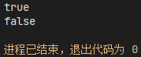
比较两个字符串对象的内容是否相等，必须使用
equals()方法（String类重写了此方法，其按字符逐个比较），==作用于对象只能比较引用是否相同
所以空字符串""和空对象null是两个概念，在判断一个字符串是否为空前，要先判断对象是否为空，否则会产生NullPointerException异常String类是final的，所以不能被继承。同时字符串也是常量，即不可变的，因为其内部使用一个
private final char value[]字段作为字符存储管理，即对原字符串做的任何处理都会创建一个新的引用对象，并且不会改变原字符串
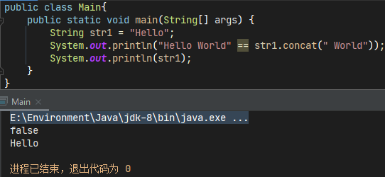使用
+运算符来连接字符串，并且也对其他对象转换为字符串提供了特殊支持。下面的代码被编译为字节码后，使用javap -verbose class文件名命令解析后可知，在执行时，字符串连接是通过StringBuilder（或StringBuffer）类及其append()方法实现的。字符串转换是通过toString()方法实现的（该方法由Object定义并由Java中的所有类继承）
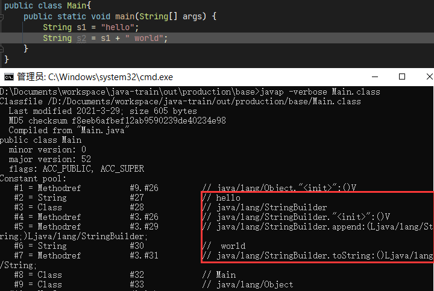
一些常用的字符串方法：
| 方法声明 | 说明 |
|---|---|
| public char charAt(int index) | 返回指定索引位置的字符值 |
| public int compareTo(String anotherString) | 按字典顺序比较两个字符串（基于Unicode值）。如果String对象按字典顺序排列在anotherString之前，结果为负整数，否则为正整数。如果字符串相等，则为0 |
| public int compareToIgnoreCase(String str) | 同上，但忽略大小写 |
| public String concat(String str) | 等同于+，将指定的字符串连接到原字符串的末尾，将会返回新的字符串 |
| public boolean contains(CharSequence s) | 当且仅当此字符串包含指定的字符时，返回true |
| public boolean endsWith(String suffix) | 检查字符串是否以指定的后缀结尾 |
| public boolean equals(Object anObject) | 将此字符串与指定对象进行比较，当且仅当对象为String类型和内容相等时，返回true |
| public boolean equalsIgnoreCase(String anotherString) | 同上，但忽略大小写 |
| public static String format(String format, Object… args) | 使用指定的格式字符串和参数返回格式化的字符串。格式化语法参考 |
| public int indexOf(int ch) | 返回指定字符第一次出现在此字符串中的位置，没有则返回-1 |
| public int indexOf(int ch, int fromIndex) | 同上，但指定开始位置 |
| public int indexOf(String str) | 返回指定字符串第一次出现在此字符串中的位置，没有则返回-1 |
| public int indexOf(String str, int fromIndex) | 同上，但指定开始位置 |
| public int length() | 返回此字符串的长度 |
| public boolean isEmpty() | 当且仅当字符串长度为0时返回true（不能用于判断对象是否为空） |
| public static String join(CharSequence delimiter, CharSequence… elements) | 返回一个由指定元素和分隔符组成的字符串 |
| public int lastIndexOf(int ch) | 返回指定字符最后一次出现在此字符串中的位置，没有则返回-1 |
| public int lastIndexOf(int ch, int fromIndex) | 同上，但指定开始位置 |
| public int lastIndexOf(String str) | 返回指定字符串最后一次出现在此字符串中的位置，没有则返回-1 |
| public int lastIndexOf(String str, int fromIndex) | 同上，但指定开始位置 |
| public boolean matches(String regex) | 判断此字符串是否与给定的正则表达式匹配 |
| public String replace(char oldChar, char newChar | 将旧字符替换为新字符并返回一个新字符串 |
| public String replace(CharSequence target, CharSequence replacement) | 将旧字符序列替换为新字符序列并返回一个新字符串 |
| public String[] split(String regex) | 使用给定正则表达式将字符串拆分为字符串数组 |
| public boolean startsWith(String prefix) | 检查字符串是否以指定的前缀开始 |
| public String substring(int beginIndex) | 从给定位置开始到结尾返回一个子字符串 |
| public String substring(int beginIndex, int endIndex) | 从给定位置开始到给定结束位置返回一个子字符串 |
| public char[] toCharArray() | 将此字符串转换为新的字符数组。 |
| public String toLowerCase() | 将所有字符串转换为小写 |
| public String toUpperCase() | 将所有字符串转换为大写 |
| public String trim() | 返回去除前导空白和尾随空白后的字符串，包括空格，\t，\r，\n，\u3000（全角空格） |
| public static String valueOf(Object obj) | 将对象转换为字符串，其提供有不同数据类型参数的共9种重载方法 |
StringBuffer
由于字符串是不可变对象，对字符串进行反复修改操作时，会产生许多临时对象，这样会浪费内存以及影响垃圾回收的效率，所以更有效率的字符串修改推荐使用StringBuffer和StringBuilder类。
效率比较：
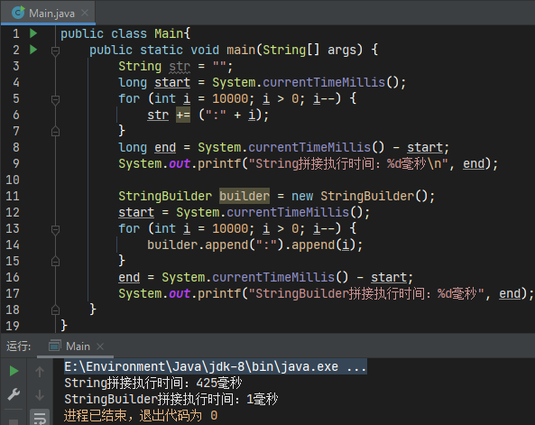
StringBuffer和StringBuilder类的区别在于，前者于JDK1.0推出，是线程安全的（同步访问），而后者于JDK1.5推出，非线程安全但执行效率更高。在大多数情况下，建议优先使用StringBuilder类
StringBuilder
创建一个StringBuilder对象需要使用new操作符调用构造方法，构造方法有以下四种：
StringBuilder()：构造一个不包含任何字符且初始容量为16个字符的StringBuilder对象StringBuilder(CharSequence seq)：以指定字符序列内容构造一个StringBuilder对象，其初始容量为字符序列参数的长度加16StringBuilder(int capacity)：构造一个不包含任何字符且指定初始容量的StringBuilder对象StringBuilder(String str)：以指定字符串构造一个StringBuilder对象，其初始容量为字符串参数的长度加16
方法：
| 方法声明 | 说明 |
|---|---|
| public StringBuilder append(String str) | 包括基本数据类型在内共13种重载方法。将指定的数据追加到此序列，其长度会随参数的长度自动增加。 若参数为null ，则将字符null附加到此序列。 |
| public StringBuilder delete(int start, int end) | 删除从start开始到end-1处的字符串，即[start, end) |
| public StringBuilder deleteCharAt(int index) | 删除指定位置处的字符 |
| public int indexOf(String str) | 返回指定字符第一次出现在此字符串中的位置，没有则返回-1 |
| public int indexOf(String str, int fromIndex) | 同上，但指定开始位置 |
| public StringBuilder insert(int offset, String str) | 包括基本数据类型在内共12种重载方法。将指定的数据按指定的位置插入此字符序列。并将原来在该位置右面的所有字符后移，并将此序列的长度增加参数的长度。 如果参数为null ，则将字符null插入到此序列中 |
| public int lastIndexOf(String str) | 返回指定字符最后一次出现在此字符串中的位置，没有则返回-1 |
| public int lastIndexOf(String str, int fromIndex) | 同上，但指定开始位置 |
| public StringBuilder replace(int start, int end, String str) | 用指定字符串替换此序列指定开始到结束位置的子字符串 |
| public StringBuilder reverse() | 反转字符串 |
StringJoiner
当需要拼接一个带前缀、后缀和使用分隔符分割每个子字符串的字符串时，可以使用StringJoiner。它有两个构造方法：
StringJoiner(CharSequence delimiter)：以指定分隔符构造一个不带前缀、后缀的StringJoiner对象StringJoiner(CharSequence delimiter, CharSequence prefix, CharSequence suffix)：以指定分隔符、前缀和后缀构造一个StringJoiner对象
以及几个实例方法：
| 方法声明 | 说明 |
|---|---|
| public StringJoiner add(CharSequence newElement) | 将给定字符序列值添加为StringJoiner的下一个元素。 如果newElement为null ，则添加字符串null |
| public int length() | 返回此StringJoiner的String表示形式的长度 |
| public StringJoiner merge(StringJoiner other) | 与另一个StringJoiner的元素合并，不使用other的前缀和后缀，但使用other的分隔符作为连接 |
图：String、StringBuilder、StringBuffer类的继承与接口关系
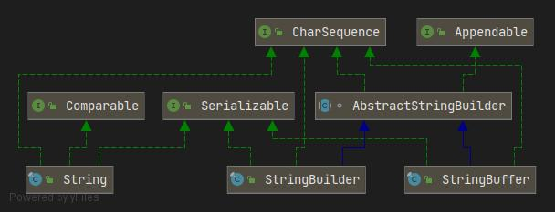
引用类型(包装类)
因为面向对象编程语言的特性，所以Java为每个基本数据类型都设计了其对应的引用类型（或者说基础类型的包装类），便于将数据视为对象使用
| 基本数据类型 | 对应的引用类型 |
|---|---|
| boolean | java.lang.Boolean |
| byte | java.lang.Byte |
| short | java.lang.Short |
| int | java.lang.Integer |
| long | java.lang.Long |
| float | java.lang.Float |
| double | java.lang.Double |
| char | java.lang.Character |
可以给引用对象赋值为null，但不能将基本类型赋值为null。包装类也和String具有相同的设计，被final修饰所以不能被继承，以及内部使用一个private final修饰的对应基本类型的value
除了Character只有第一个以外每个包装类都有两个构造方法
- 根据基本类型创建包装类对象
- 根据字符串创建包装类对象
对于第二种构造方法，不同的引用类型有不同的处理方法，所有的整数类型必须是十进制格式，浮点数类型可以使用科学计数法，否则会抛出NumberFormatException异常；Boolean会把除了“true”以外的字符串都转换为false
字段：包装类中也定义了一些静态常量字段，如类型所占二进制位数
SIZE，字节数BYTES，最大值MAX_VALUE，最小值MIN_VALUE，浮点数类型还有NaN（非数字），正无穷POSITIVE_INFINITY以及负无穷NEGATIVE_INFINITY方法：整数与浮点数包装类继承自
Number类，重写了xxxValue()方法所以可以把包装类对象转换为其它基本类型的数据，实际上还是强制类型转换
所有包装类都实现了Comparable接口重写compareTo()方法，用以比较两个包装类的值的大小
虽然都是用于类型转换的方法，但
valueOf(String s)和parseXxx(String s)是有区别的：前者返回包装类型，后者返回基本类型，并且valueOf(String s)会调用parseXxx(String s)方法 所以建议优先使用parseXxx(String s)方法
自动装箱&拆箱
从基本类型转换到引用类型这一过程叫“装箱”，反正则是“拆箱”，因为Java编译器自动在基本类型和引用类型之间进行转型，所以被称为自动装箱（Auto Boxing）和自动拆箱（Auto Unboxing）
1 | Integer a = 1; // Auto Boxing |
在编译后实际执行的字节码中，是严格区分基本类型和引用类型的，所以自动装箱和自动拆箱只会发生在编译过程中。
因为可以给对象赋值为null，而不能给基本类型null值，所以自动拆箱时可能会引发NullPointerException
整数缓存机制
在所有整数引用类型（Byte、Short、Integer、Long）中，都有一个名字带有Cache的私有静态内部类，其用于存储-127~128之间的数值，因为java认为这个范围的数据使用是最频繁的，将其生成的包装类对象存储在方法区的常量池中共享可以增加程序执行的效率
如图，若没有缓存机制，则a == b也是false
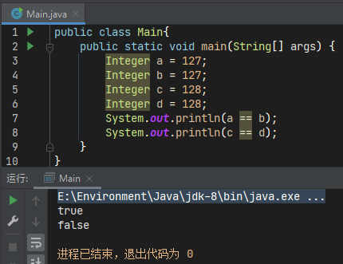
缓存以支持JLS（java语言规范-5.1.7装箱转换）要求的-128到127（含）之间的值的自动装箱的对象标识语义。 首次使用时会初始化缓存。高速缓存的大小可以由-XX:AutoBoxCacheMax=<size>选项控制。 在虚拟机初始化期间，可以在sun.misc.VM类的私有系统属性中设置并保存java.lang.Integer.IntegerCache.high属性。
图：所有包装类的继承与接口关系
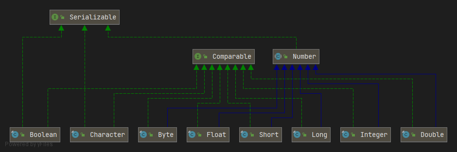
数学计算
Math
Math类包含了用于执行基本数学运算的一些属性和方法。
Math类是不可被继承的（被final修饰），无法实例化（private的无参构造方法），所以其大量的方法是静态的，直接调用即可
常量有两个，自然对数E和圆周长与直径的比π
1 | public static final double E = 2.7182818284590452354; |
方法示例：
1 | public static void main(String[] args) { |
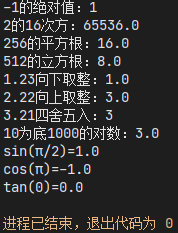
默认情况下，Math类的多数方法只是简单地调用StrictMath的等效方法。鼓励代码生成器使用特定于平台的本机库或微处理器指令（如果有）来提供Math方法的高性能实现。这种更高性能的实现仍必须符合Math的规范。
而StrictMath类的一些方法被声明为native且没有方法体，即方法的实现是由其它语言提供的，这一技术叫JNI（Java Native Interface），通过使用Java本地接口书写程序，可以确保代码在不同的平台上具有相同的计算结果，便于移植。通常情况下使用Math就行了
Random
Math类仅提供了一个random()方法用以生成[0, 1)之间的随机数，其相当于调用new Random().nextDouble()。而Random类则是专门用于产生随机数的
只有两个构造方法
- 无参构造方法Random()：创建一个新的随机数生成器。该构造方法将使用种子唯一化器与系统纳秒时间值按位异或作为随机数生成器的种子，确保每次调用时都有不同的结果。
- Random(long seed)：使用long类型的种子创建一个新的随机数生成器。如果手动指定种子，则随机数生成器对象每次将产生相同的值
实例方法：
1 | Random r = new Random(); |
BigInteger
当需要计算的数据范围超过了long型的最大范围2^63^-1时怎么办呢，java提供了一个大整数类型BigInteger用来处理这种情况，其内部使用了一个int[]用来存放数据，和一个int值来表示符号。因为计算机的内存是有限的，所以BigInteger的实现也要求了其最大范围：当结果超出(-2^Integer.MAX_VALUE^, 2^Integer.MAX_VALUE^)时，调用BigInteger的构造函数和操作都将引发ArithmeticException
使用BigInteger做计算的时候只能使用实例方法，不能使用运算符
1 | public static void main(String[] args) { |
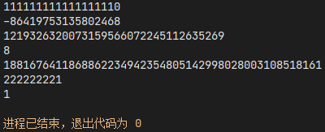
BigDecimal
和BigInteger类似，因为基本类型的浮点数无法准确的表示其值，所以使用BigDecimal用于处理需要高精度计算的浮点数，内部使用BigInteger值储存数字，int值scale储存小数位数
1 | public static void main(String[] args) { |
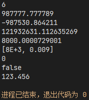
舍入模式有下面几种
ROUND_UP：向零远的方向舍入ROUND_DOWN：向零近的方向舍入ROUND_CEILING：向正无穷的方向舍入ROUND_FLOOR：向负无穷的方向舍入ROUND_HALF_UP：四舍五入ROUND_HALF_DOWN：五舍六入ROUND_HALF_EVEN：需要舍入的上一位若是奇数则四舍五入，若是偶数则五舍六入ROUND_UNNECESSARY：不作舍入，如果发生除不尽的情况，则抛出异常ArithmeticException
时间与日期
最简单的，获取时间戳：
1 | /* |
在JavaSE 8之前，日期和时间机制是由java.util.Date，java.util.Calendar和java.util.TimeZone类及其子类提供的。
这些类有几个缺点，例如：
Calendar类不是类型安全的。- 因为类是可变的，所以它们不能用于多线程应用程序。
- 应用程序代码中的错误是常见的，因为月份的编号不常见，并且缺乏类型安全性。
额外的，java.sql.Date专门用于数据库的日期对象，其继承自java.util.Date，会自动忽略所有时间相关信息
所以此节将侧重于java.time包下的时间日期类。这是用于表示日期和时间的 API 的核心，它包括日期，时间，日期和时间组合，时区，瞬时，持续时间和时钟的类。这些类是基于ISO-8601中定义的日历系统，并且是不可变的（和String类似）和线程安全的。其分为如下几类：
- 星期和月的枚举：
DayOfWeek，Month - 本地日期和时间：
LocalDateTime，LocalDate，LocalTime - 带时区的日期和时间：
ZonedDateTime - 时刻：
Instant - 时区：
ZoneId，ZoneOffset - 时间间隔：
Period，ChronoUnit，Duration
ISO-8601日历系统是国际标准化组织的日期和时间的表示方法，全称为“数据存储和交换形式·信息交换·日期和时间的表示方法”。它是当今世界上大部分地区使用的现代民用日历系统。它相当于前公历制度，即所有时间适用于闰年规则。对于现代编写的大多数应用程序，ISO-8601规则是完全合适的。但是对于要求准确历史日期的应用程序来说不合适。
方法的前缀命名标准：
| 前缀 | 方法类型 | 说明 |
|---|---|---|
of |
静态工厂 | 创建一个实例，其中工厂主要验证输入参数，而不是转换它们。 |
from |
静态工厂 | 将输入参数转换为目标类的实例，这涉及可能从输入中丢失信息。 |
parse |
静态工厂 | 解析输入字符串以生成目标类的实例。 |
format |
实例 | 使用指定的格式化程序格式化时间对象中的值以生成字符串。 |
get |
实例 | 返回目标对象状态的一部分。 |
is |
实例 | 查询目标对象的状态。 |
with |
实例 | 返回目标对象修改后的副本。这与 JavaBean 中的 set 方法不同。 |
plus |
实例 | 返回目标对象的副本，并添加指定的时间量。 |
minus |
实例 | 返回目标对象的副本，并减去指定的时间量。 |
to |
实例 | 将此对象转换为另一种类型。 |
at |
实例 | 将此对象与另一个对象组合。 |
常量
DayOfWeek枚举提供了从MONDAY到SUNDAY共七个用于指定一周中星期几的常量，以及除了枚举类默认方法以外的一些实用方法
1 | public static void main(String[] args) { |
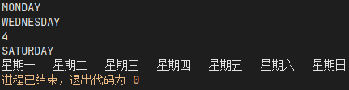
Month枚举提供了从JANUARY到DECEMBER用于指定一年中几月的常量，与DayOfWeek枚举类似，Month枚举常量的整数值范围为1到12
1 | public static void main(String[] args) { |
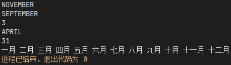
本地日期
java.time包中的API有4个专门用于处理日期的类，而不用考虑时间或时区。它们分别是：LocalDate、YearMonth、MonthDay和Year
LocalDate类表示本地日期年月日，用于不需要显示时间的日期
1 | public static void main(String[] args) { |
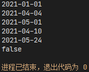
YearMonth类表示特定的年和月
1 | public static void main(String[] args) { |
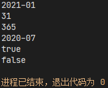
MonthDay类表示特定的月和日，Year类表示年
1 | public static void main(String[] args) { |
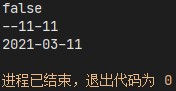
本地时间
与LocalDate类类似的LocalTime类仅处理时间，但不存储时区和夏令时信息。使用24小时制，小时数从0到23，分钟数与秒数从0到59，纳秒数从0到999,999,999，但通常纳秒数只有前3位，后面都是0
LocalDate与LocalTime组合在一起就是LocalDateTime类了，它用于同时处理日期和时间，也不会储存时区信息。并且根据ISO-8601标准，日期与时间同时显示时，使用T连接
1 | public static void main(String[] args) { |
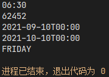
时区和偏移
时区是使用相同标准时间的地球区域，每个时区可以由标识符描述，通常格式为时区标识符region/city和GMT/UTC时间的偏移量。例：Asia/Shanghai +08:00
ZoneId指定时区标识符，并提供在Instant和LocalDateTime之间进行转换的方法。ZoneOffset指定从GMT/UTC时区的偏移。ZonedDateTime处理日期和时间，带有与GMT/UTC时间的偏移量。相当于结合了LocalDateTime类与ZoneId类OffsetDateTime处理日期和时间，带有与GMT/UTC时间的偏移量，没有时区标识符。相当于结合了LocalDateTime类与ZoneOffset类OffsetTime处理时间，带有与GMT/UTC时间的偏移量，没有时区标识符。相当于结合了LocalTime类与ZoneOffset类
1 | public static void main(String[] args) { |
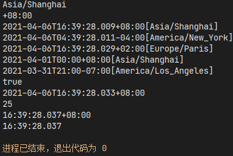
何时使用
OffsetDateTime与ZonedDateTime？如果用于编写复杂的软件，根据地理位置为自己的日期和时间计算规则建模，或者将时间戳存储在仅跟踪GMT/UTC时区绝对偏移的数据库中，那么可以选择使用OffsetDateTime。此外，XML和其他网络传输格式将日期时间的格式定义为OffsetDateTime或OffsetTime。虽然
ZonedDateTime、OffsetDateTime与OffsetTime类都带有与GMT/UTC时间的偏移量，但只有ZonedDateTime使用ZoneRules，这是java.time.zone包下的类，其用于确定特定时区的偏移量的变化情况。ZonedDateTime类适用于如夏令时的计算场景，而OffsetDateTime和OffsetTime类没有使用ZoneRules所以不适用。
时刻与间隔
Instant类表示时间轴上纳秒的开始，可以用于生成表示机器时间的时间戳。返回的值是从1970年1月1日0时0分0秒（GMT）开始计算的
1 | public static void main(String[] args) { |
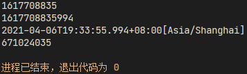
Duration用于测量基于秒（或纳秒）为单位的时间量；或者通过Period类来表示基于日期值(年，月，日)定义的时间量，这些时间计算都不会考虑时区或夏令时的影响
1 | public static void main(String[] args){ |
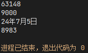
格式化
使用java.time包下的时间日期类时，若要进行格式化输出，需要使用其相应的格式化程序DateTimeFormatter，此类提供了一组预定义的格式化程序，也可以使用规定好的格式化解析参数
1 | public static void main(String[] args) { |
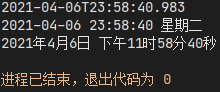
数组处理Arrays
Arrays工具类包含了用于操纵数组的各种静态方法
1 | public static void main(String[] args) { |
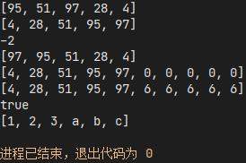
其它
Optional
Optional类是一个可以包含null值的容器对象，用于解决空指针异常的问题。Optional构造方法是私有的，所以无法被实例化，通过调用其静态方法获取对象
empty()：返回一个空的Optional实例of(T value)：T为泛型。以指定值返回一个Optional实例，如果传入值为null会抛出NullPointerExceptionofNullable(T value)：同上，但允许null值
实例方法：
1 | public static void main(String[] args) { |
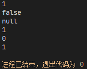
UUID
UUID（Universally Unique Identifier，通用唯一标识码）是用于计算机体系中识别信息数目的一组8bit128个数字所构成的标识符。GUID（Globally Unique Identifier）全球唯一标识码则特指微软对UUID标准的实现。
java中的UUID类仅有一个公共的构造方法：UUID(long mostSigBits, long leastSigBits)，但需要指定最高64位有效值和最低64位有效值，所以为了便于使用，有三种静态方法来创建UUID：
1 | public static void main(String[] args) { |
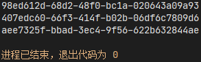
实例方法：
variant()：变体，占1、2或3bit，在标准表示形式的第四组第一个表示。共有4种- 0，二进制0，保留，用于向后兼容已经过时的NCS（1988年开发的Apollo网络计算系统）
- 2，二进制10，由IETF RFC 4122(Leach-Salz)定义。使用大端序作为二进制存储与传输方式。此类使用的就是这个
- 6，二进制110，保留，由微软向后兼容。使用小端序作为二进制存储与传输方式
- 7，二进制111，保留，便于以后定义
version()：版本，在标准表示形式的第三组第一个表示。对于第二和第三种变体，标准中定义了五种版本，java中只有前四种- 1，基于时间戳、随机数和机器MAC地址的UUID
- 2，基于DEC安全的UUID
- 3，基于名称的UUID。通过计算MD5散列值和命名空间（namespace）标识符获得
- 4，使用随机性或伪随机性生成
- 5，同3，但是使用SHA1算法
clockSequence()：UUID的时钟序列值，仅版本1可用timestamp()：UUID的时间戳，以100纳秒为单位，自1582年10月15日起计算，仅版本1可用getMostSignificantBits()：返回最高64位有效值getLeastSignificantBits()：返回最低64位有效值toString()：UUID的标准字符串表示形式
Base64
Base64是一种基于64个可打印字符来表示二进制数据的表示方法。由于log
264=6，所以每6个比特为一个单元，对应某个可打印字符。3个字节相当于24个比特，对应于4个Base64单元，即3个字节可由4个可打印字符来表示。在Base64中的可打印字符包括字母A-Z、a-z、数字0-9，共62个字符，此外两个可打印符号在不同的系统中而不同。一些如uuencode的其他编码方法，和之后BinHex的版本使用不同的64字符集来代表6个二进制数字，但是不被称为Base64。Base64常用于在通常处理文本数据的场合，表示、传输、存储一些二进制数据，包括MIME的电子邮件及XML的一些复杂数据。
Java的Base64类则提供了三种不同方式的编码器和解码器实现：
- 基本的：使用RFC 4648中表1和RFC 2045指定的base64字符进行编码和解码操作。编码器不添加任何换行符，解码器拒绝base64以外的字符数据。
- URL和文件名安全的：使用RFC 4648中表2指定的base64字符进行编码和解码操作。其它同上
- MIME：使用RFC 2045中表1指定的base64字符进行编码和解码操作。编码后的每行不超过76个字符，并且使用
\r\n作为行分隔符。编码输出最后没有行分隔符
通常使用下面几个静态方法来获取编码器和解码器：
1 | // 编码器，依次对应上述三种类型 |
示例：
1 | byte[] uuid = UUID.randomUUID().toString().getBytes(StandardCharsets.UTF_8); |
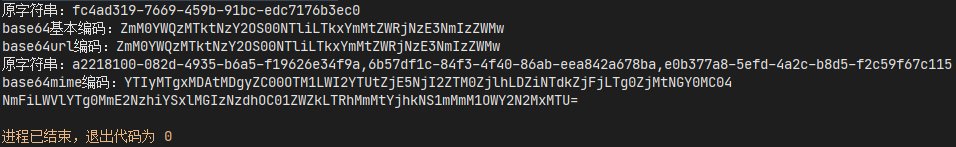